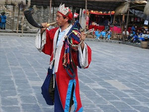
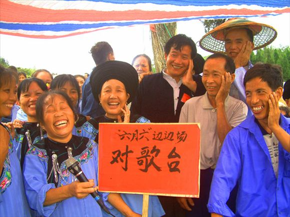
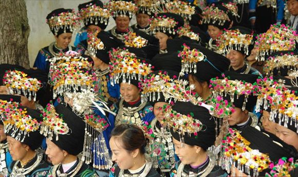
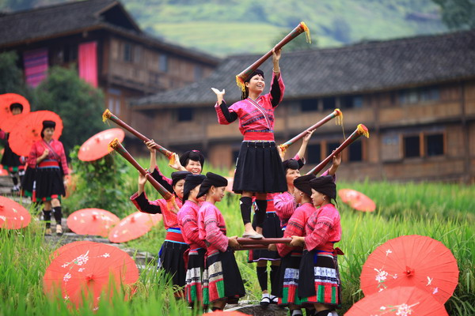
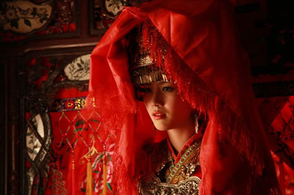

凤凰古城的－－宗教文化
宗教信仰是苗族人和土家族人在长期的生产生活中
累积出来的，其中苗族人主要信仰自然崇拜和图腾崇拜，
而土家族人则信仰祖先崇拜等。对于来说，
苗族人更加迷信鬼神和盛行巫术。
这也是为什么出现了赶尸、降头术等一系列巫术文化。

凤凰风土人情之民族歌舞
土家族和苗族的歌舞很多，不过最有名的还是土家族的茅古斯舞、
摆手舞等。而最热闹的可能就是苗族四月八、
六月六等节日，那四面八方的苗族人都会齐聚一堂，载歌载舞，热闹至极。

苗族人与银饰品
说起苗族，想必很多人想到的就是穿着传统的少数民族服饰，
然后头上戴着银帽子，身上披着各种银制品。
走起路来，叮叮当当响个不停，想必就是大家对苗族的一个概念吧。
也许很多人都在想，苗族人是不是很富有啊，不然怎么会每个人身上都批这么多银子？

湘西凤凰民俗节日跳香会
湘西文化丰富多彩，多民族的生存让当地的风俗
与其他地方完全不同，形成了独特的文化，
其中苗族的跳香会就是一个充满浓郁民族色彩的民俗节日，
动感热烈的祭祀仪式让人叹为观止。

凤凰风土人情之婚姻嫁娶
婚姻嫁娶是大家比较感兴趣的风俗之一，少数民族结婚与城市里面的
结婚有很大的不同。没有高档的小轿车，也没有隆重的结婚典礼，
一切都是显得那么的简朴。但是并不失热闹，可以说更加的热闹和喜庆。